| Trust_Govt | Mean | 1st quartile | Median | 3rd quartile |
|---|---|---|---|---|
| Almost always | 0.38 | 0.15 | 0.38 | 0.67 |
| Most of the time | 0.41 | 0.25 | 0.42 | 0.50 |
| Some of the time | 0.45 | 0.33 | 0.42 | 0.58 |
| Almost Never | 0.49 | 0.33 | 0.50 | 0.67 |
Bivariate Analyses
Visualizing the relationship between two variables
NEW R Script: Bivariate_Visualizations.R
Justin Leinaweaver (Spring 2026)
H1. Belief in liberal CTs increases as trust in government falls
| Trust_Govt | Mean | 1st quartile | Median | 3rd quartile |
|---|---|---|---|---|
| Almost always | 0.38 | 0.15 | 0.38 | 0.67 |
| Most of the time | 0.41 | 0.25 | 0.42 | 0.50 |
| Some of the time | 0.45 | 0.33 | 0.42 | 0.58 |
| Almost Never | 0.49 | 0.33 | 0.50 | 0.67 |
H2. Belief in conservative CTs increases as trust in government falls
| Trust_Govt | Mean | 1st quartile | Median | 3rd quartile |
|---|---|---|---|---|
| Almost always | 0.40 | 0.25 | 0.38 | 0.44 |
| Most of the time | 0.25 | 0.08 | 0.25 | 0.33 |
| Some of the time | 0.25 | 0.08 | 0.25 | 0.42 |
| Almost Never | 0.34 | 0.17 | 0.33 | 0.50 |
H3. Democrats are more likely to believe liberal coded conspiracies
| Party3 | Mean | 1st quartile | Median | 3rd quartile |
|---|---|---|---|---|
| Democrat | 0.50 | 0.33 | 0.50 | 0.58 |
| Independent | 0.51 | 0.33 | 0.50 | 0.67 |
| Republican | 0.32 | 0.17 | 0.33 | 0.42 |
H4. Republicans are more likely to believe conservative coded conspiracies
| Party3 | Mean | 1st quartile | Median | 3rd quartile |
|---|---|---|---|---|
| Democrat | 0.19 | 0.08 | 0.17 | 0.33 |
| Independent | 0.35 | 0.17 | 0.33 | 0.50 |
| Republican | 0.44 | 0.33 | 0.42 | 0.58 |
Bivariate Analyses: Visualization
Add the following to your notes:
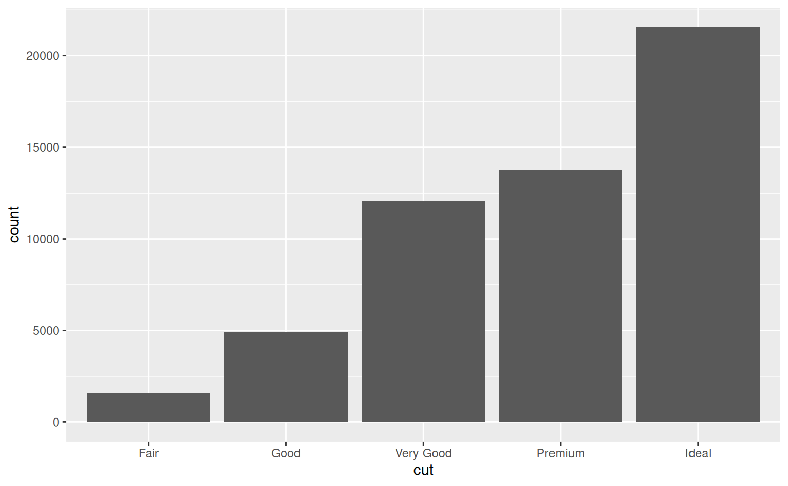
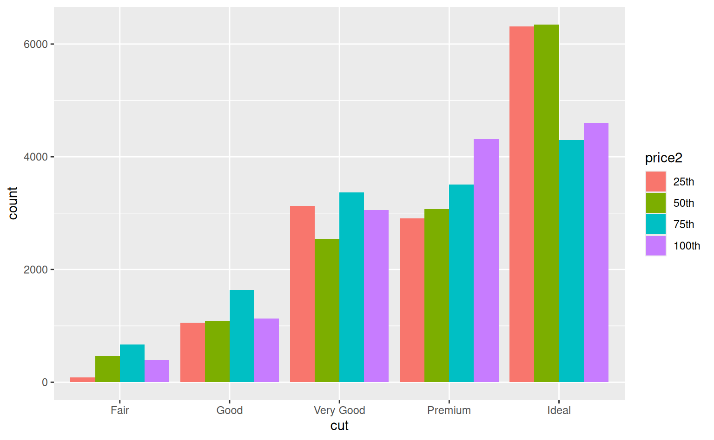
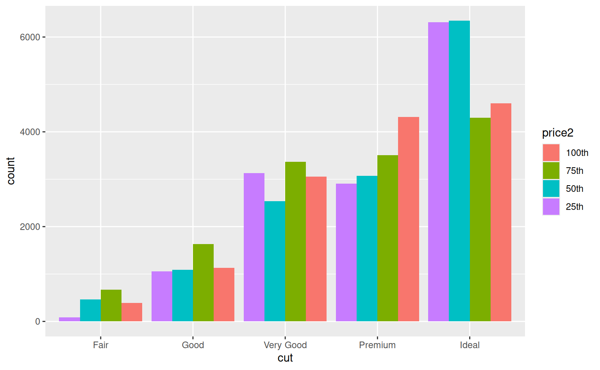
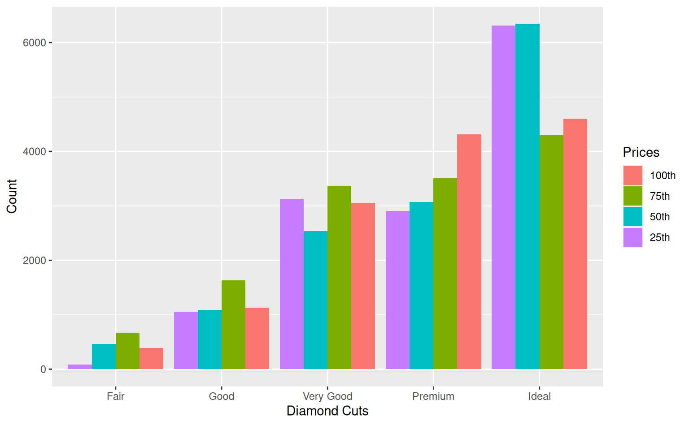
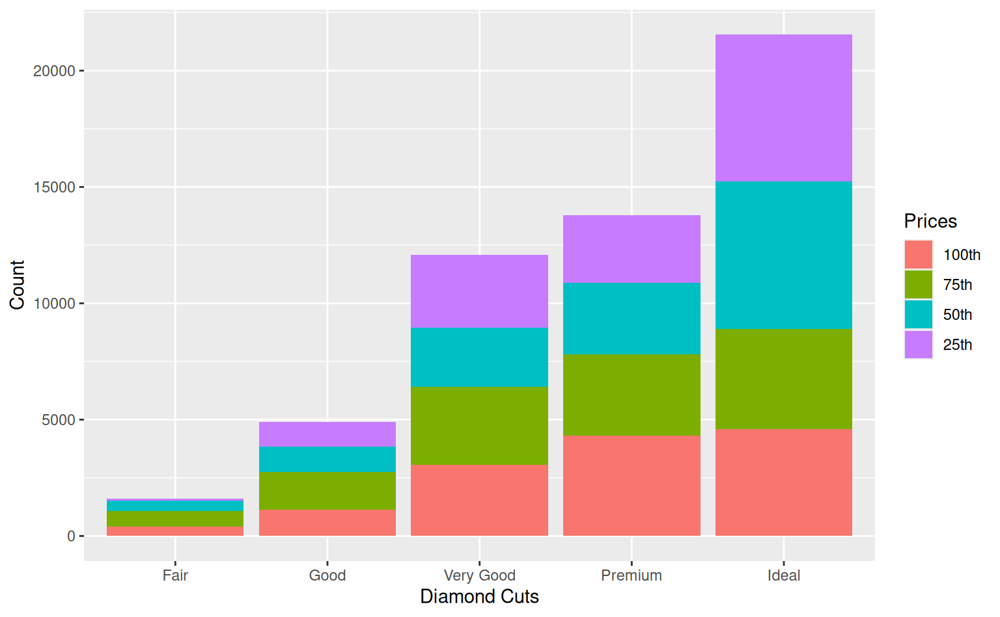
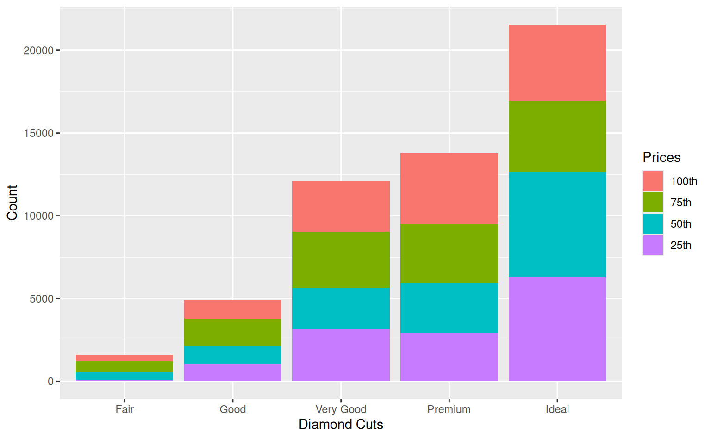
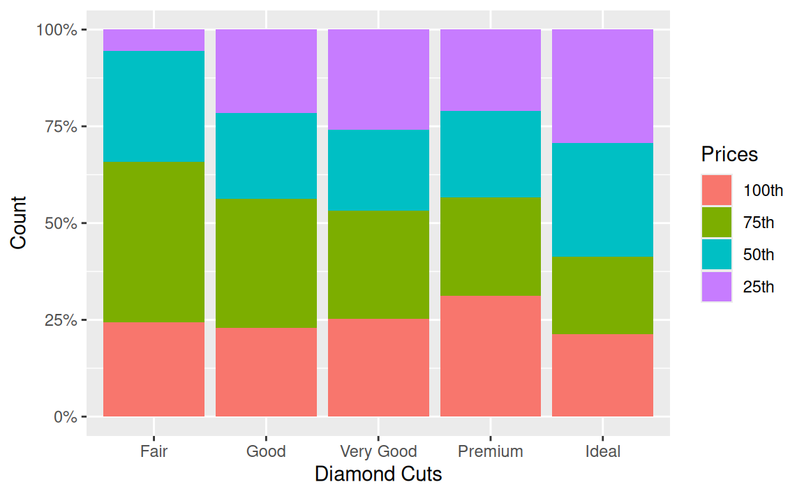
# Reverse the order of the levels
diamonds$price3 <- fct_rev(diamonds$price2)
ggplot(diamonds, aes(x = cut, fill = price3)) +
geom_bar(position = "fill") +
scale_fill_discrete(limits = c("100th", "75th", "50th", "25th")) +
labs(x = "Diamond Cuts", y = "Count", fill = "Prices") +
scale_y_continuous(labels = scales::percent)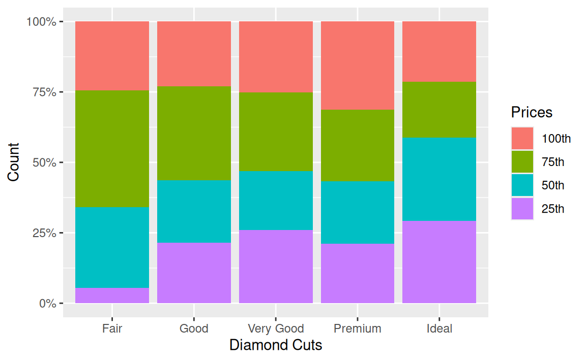
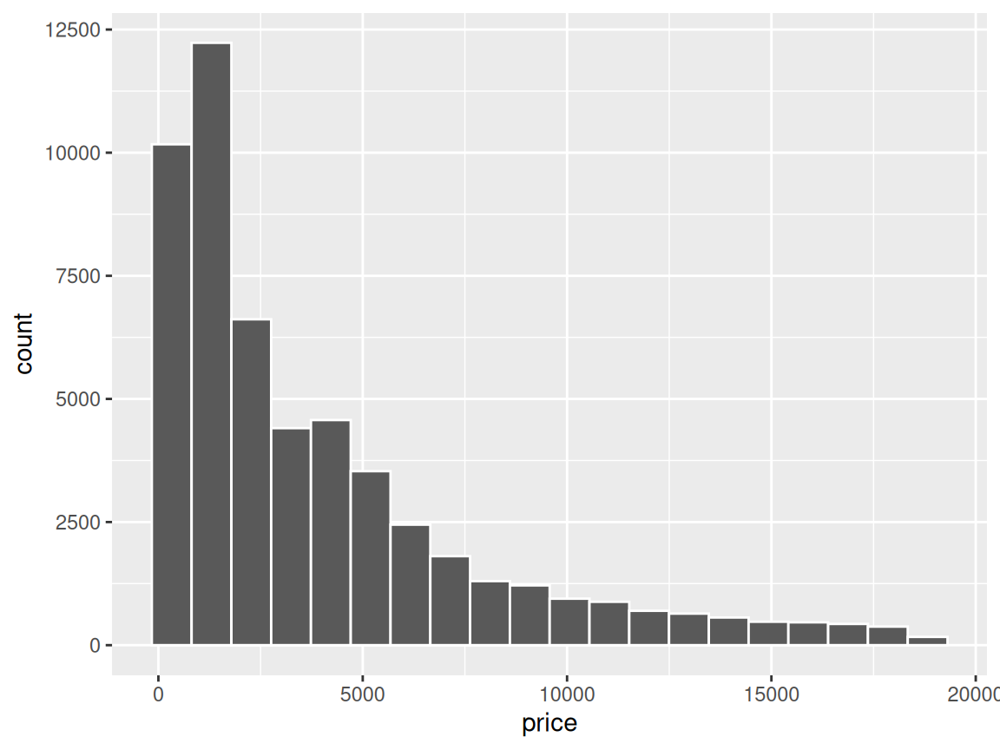
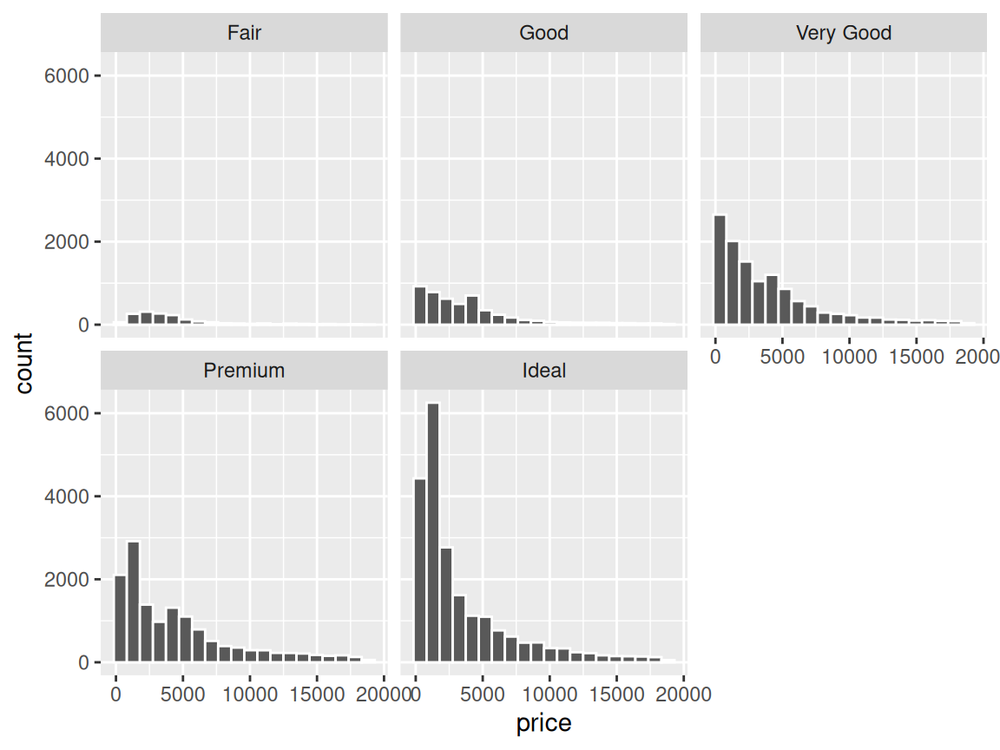
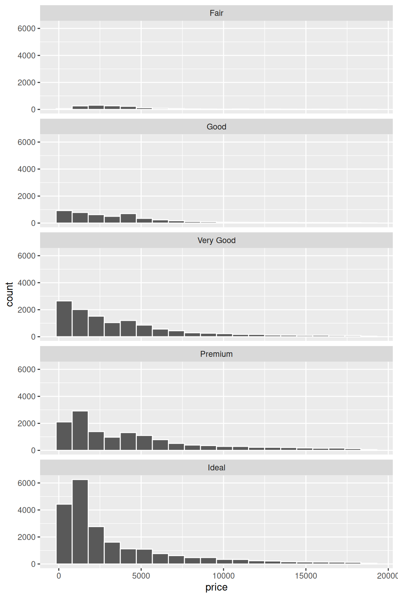
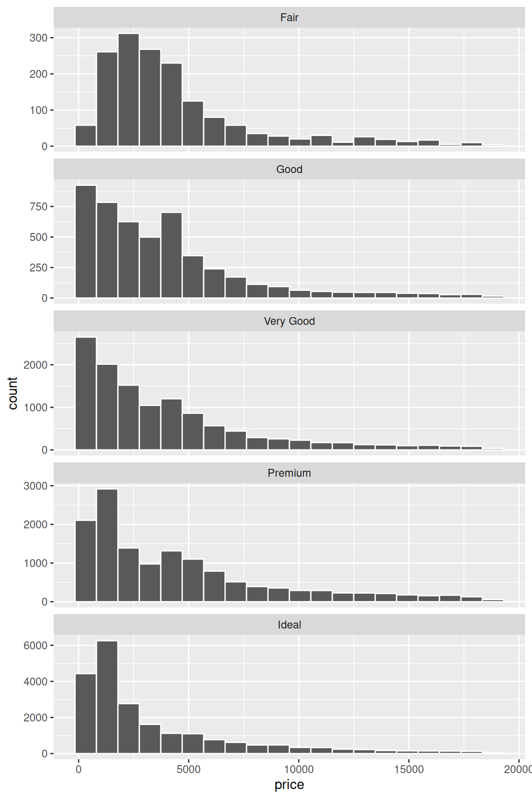
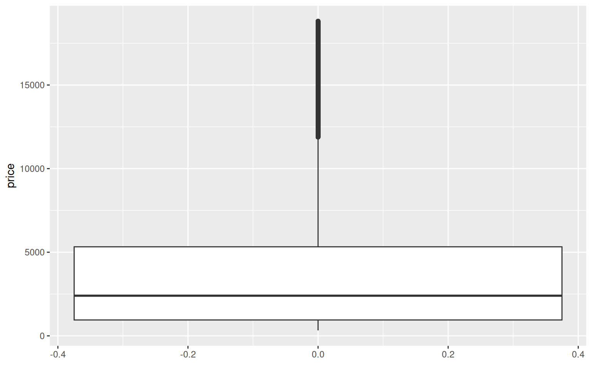
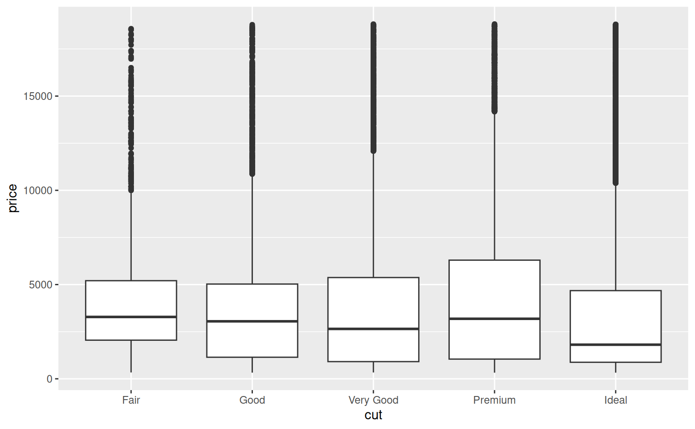
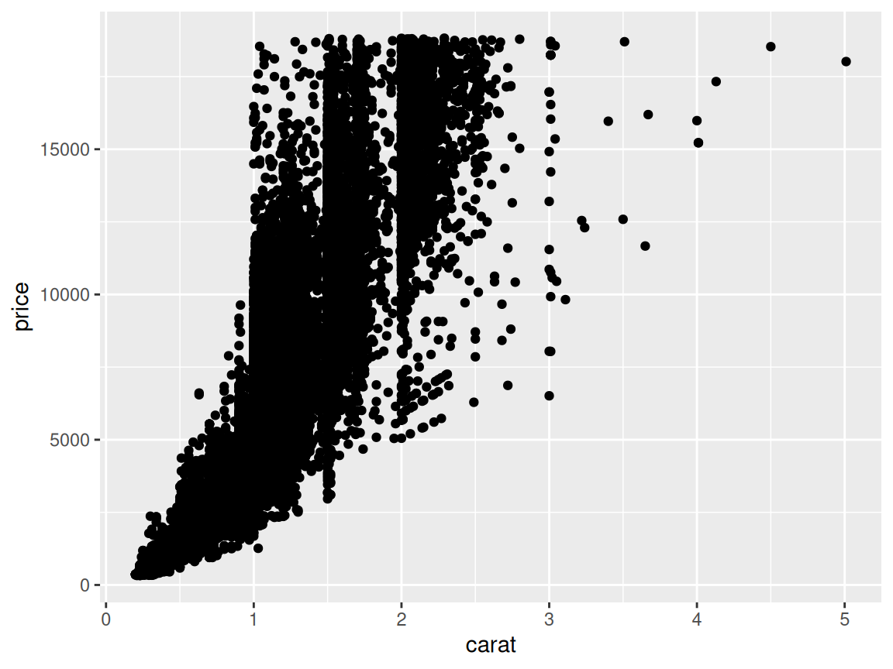
Bivariate Analyses: Visualization
Categorical x Categorical
Interval x Categorical
Interval x Interval
Practicing Bivariate Visualizations Using ANES Data
Analyzing political engagement across levels of:
Social class
Party identification